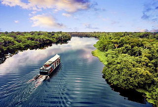

Iquitos es una ciudad puerto peruana y una vía de acceso a los alojamientos en la selva y las villas del norte del Amazonas. El distrito de Belén es conocido por su enorme mercado callejero al aire libre y los palafitos rústicos sobre pilotes que bordean el río Itaya. En el centro histórico, se encuentra la Plaza de Armas, rodeada de edificios con influencia europea.
Iquitos es tierra de alegría, calor y sabor. Al ritmo de la cumbia y el ruido de los mototaxis, esta ciudad recibe al viajero con el corazón abierto, una naturaleza exuberante, atardeceres de ensueño, costumbres exóticas y misterios ancestrales. La Amazonía peruana está llena de contagiante felicidad para los espíritus aventureros.
Se trata de una de las ciudades más visitadas por turistas peruanos y extranjeros. Además de contar con impresionantes destinos, es el principal punto de partida para conocer el río Amazonas, una de las Siete Maravillas Naturales del Mundo. A continuación, te contamos 5 razones por las que debes visitar la capital de la Amazonía peruana.
|  |